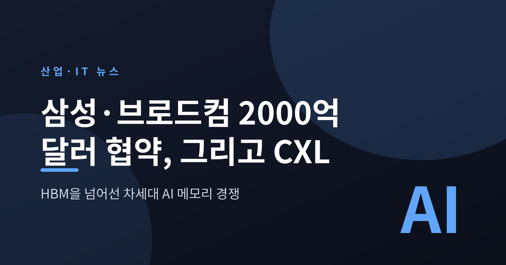
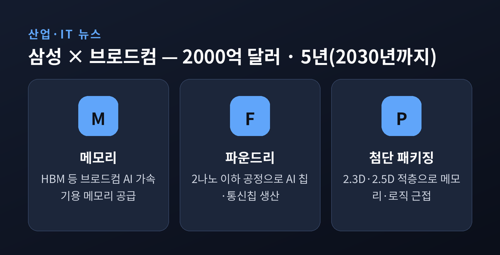
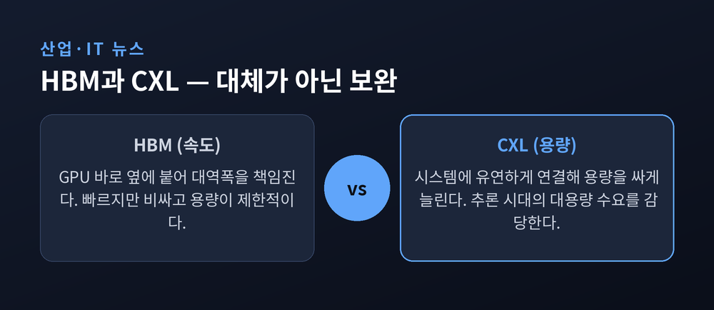
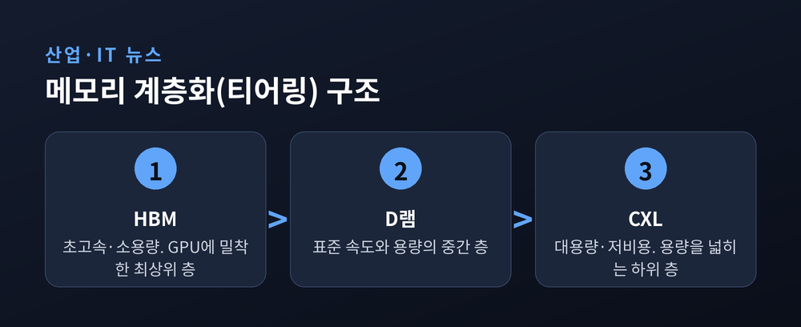
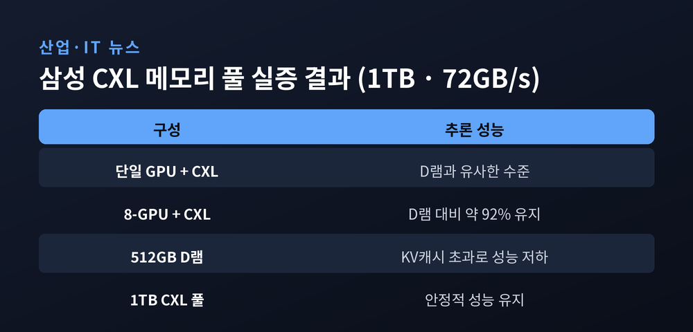
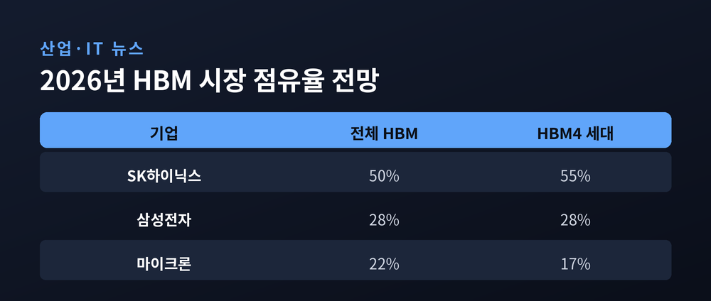

이번 글에서는 삼성전자와 브로드컴이 맺은 2000억 달러 규모의 협약, 그리고 그 뒤에 자리한 CXL 메모리 이야기를 정리해 보겠습니다. 숫자만 보면 그저 큰 계약 하나로 지나칠 수 있습니다. 하지만 그 안을 들여다보면, AI 메모리의 무게중심이 서서히 옮겨가는 장면이 보입니다.
2026년 7월 24일, 미국 샌프란시스코에서 열린 'AI 서밋'에서 삼성전자가 미국의 반도체 설계 기업 브로드컴과 손을 잡았습니다. 규모는 5년간, 2030년까지 2000억 달러 이상. 우리 돈으로 약 290조 원에 달하는 전략적 업무협약(MOU)입니다.

눈여겨볼 대목은 협력의 범위입니다. 단순히 메모리만 대는 계약이 아닙니다. 브로드컴이 설계한 AI 칩을 삼성이 2나노 이하 공정으로 만들고, 여기에 HBM 같은 메모리를 붙이고, 첨단 패키징으로 마무리합니다. 설계는 브로드컴이, 나머지는 삼성이 맡는 일괄 체계인 셈입니다.
다만 한 가지는 짚고 넘어가야 합니다. 이 협약은 구속력 있는 확정 계약이 아니라 MOU, 곧 협력 의향서입니다. 방향을 함께 정한 것이지, 물량과 금액을 못 박은 것은 아닙니다.
메모리 시장의 판이 바뀌고 있기 때문입니다.
예전의 D램은 값이 오르내리는 흔한 부품에 가까웠습니다. 지금은 다릅니다. AI 데이터센터가 메모리를 통째로 빨아들이면서, 메모리는 'AI 인프라의 핵심 자원'이 됐습니다. 시장조사기관 옴디아는 2026년 데이터센터가 전 세계 메모리 소비의 70%를 차지할 것으로 봅니다. IDC는 2026년 세계 반도체 매출이 전년보다 62.7% 늘어날 것으로 내다봤습니다. 그 성장의 한가운데에 AI 메모리가 있습니다.
이번 협약도 홀로 나온 것이 아닙니다. 이재명 대통령이 주최한 AI 서밋을 계기로 발표된, 한미 기업 간 약 9500억 달러 규모의 반도체 협력 패키지 가운데 하나입니다. 그만큼 국가 차원의 무게가 실린 사안이라는 뜻입니다.
그래서 이번 협약은 삼성에게 단순한 매출 이상의 의미를 가집니다. 그동안 삼성 파운드리는 대만 TSMC에 밀린다는 평가를 받아 왔습니다. 브로드컴이라는 큰 고객을 설계부터 패키징까지 통째로 확보한 것은, 그 흐름을 되돌릴 발판이 될 수 있습니다.
같은 시기 SK하이닉스도 움직였습니다. 엔비디아와 5000억 달러가 넘는 초대형 협력을 추진하며, 엔비디아를 포함한 10여 곳과 장기 공급 계약을 마무리했습니다. 삼성은 브로드컴을, SK하이닉스는 엔비디아를. AI 시대의 큰손 고객을 양대 메모리 기업이 나눠 쥐는 그림입니다.
이번 이야기의 진짜 축은 CXL입니다.
지금까지 AI 메모리의 주인공은 HBM, 곧 고대역폭메모리였습니다. GPU 옆에 바짝 붙어 데이터를 빠르게 나르는 역할입니다. 문제는 HBM이 비싸고 용량이 제한적이라는 점입니다.
AI가 학습을 넘어 '추론' 단계로 넘어가면서 상황이 달라졌습니다. 추론은 훨씬 많은 메모리 용량을 요구합니다. 답을 만들어내는 과정에서 이전 대화의 맥락을 잔뜩 쌓아두어야 하기 때문입니다. 이 저장 공간을 KV캐시라고 부릅니다. 대화가 길어질수록 KV캐시는 눈덩이처럼 불어납니다. 빠르기만 한 HBM만으로는 감당이 어려워진 것입니다.
여기서 등장한 것이 CXL(Compute Express Link)입니다. HBM이 '속도'를 맡는다면, CXL은 '용량을 싸게 늘리는' 역할을 합니다. 둘은 경쟁 관계가 아니라 서로를 메우는 보완 관계입니다.

업계는 이 둘을 층층이 쌓는 전략을 씁니다. 가장 빠른 HBM을 맨 위에, 그다음 일반 D램, 그리고 대용량 CXL을 아래에 두는 방식입니다. 데이터의 성격에 따라 알맞은 층에 배치하는 이 구조를 '메모리 계층화(티어링)'라고 부릅니다.

말보다 수치가 설득력이 있습니다.
삼성전자는 엔비디아의 RTX 프로 6000 블랙웰 GPU 서버에 자사의 CMM-D 모듈을 붙여 1TB 규모의 CXL 메모리 풀을 꾸렸습니다. 그리고 AI 추론 성능을 재봤습니다. 단일 GPU 환경에서는 D램과 거의 같은 성능이 나왔습니다. GPU 8개를 쓰는 환경에서도 D램 대비 약 92% 성능을 지켰습니다.
특히 512GB D램 구성은 추론에 필요한 KV캐시가 용량을 넘어서면서 성능이 주저앉았지만, 1TB CXL 풀은 흔들리지 않았습니다. '용량이 곧 성능'이 되는 추론 시대에, CXL의 쓸모를 보여준 장면입니다.

삼성의 CMM-D는 최대 1TB 용량과 72GB/s 대역폭을 갖췄습니다. 이미 CXL 2.0 기반 제품은 대량 양산에 들어갔고, CXL 3.1을 지원하는 제품은 2026년 4분기 업계 최초 양산을 노리고 있습니다.
그런데 이 무대에 삼성만 있는 것은 아닙니다. SK하이닉스도 CXL 2.0 기반 제품의 고객 인증을 마치고 뒤를 바짝 쫓고 있습니다. HBM에서 벌어진 경쟁이 CXL로 그대로 옮겨붙은 셈입니다.
HBM 성적표를 보면 두 회사의 처지가 선명합니다. 2026년 전체 HBM 시장 점유율 전망은 SK하이닉스 50%, 삼성전자 28%, 마이크론 22% 수준입니다. HBM3E까지는 SK하이닉스가 엔비디아 물량의 70% 안팎을 쥐며 앞서 나갔습니다.

삼성으로서는 차세대 HBM4와 CXL이 반격의 카드입니다. 2026년 삼성의 HBM 매출은 전년 대비 3배 이상 늘 것으로 전망됩니다. 브로드컴 협약은 그 흐름에 힘을 보태는 장작인 셈입니다.
한동안 메모리는 모자랄 것입니다.
AI 인프라 투자가 이어지면서, 여러 기관은 메모리 공급 부족이 2027년까지, 길게는 2028년 이후까지 계속될 것으로 봅니다. 삼성전자 김재준 메모리사업부장은 2027년의 공급 부족이 올해보다 더 심해질 것이라 경고하기도 했습니다. 값이 오르는 속도는 2026년 하반기부터 2027년 상반기가 가장 가파를 전망입니다.
물론 낙관만 하기는 이릅니다. 브로드컴 협약은 아직 MOU 단계이고, CXL이 데이터센터 표준으로 자리 잡기까지는 시간이 더 필요합니다. 공급 부족이 언제 풀릴지도 전망이 엇갈립니다. 기술의 방향은 보이지만, 결승선은 아직 멀리 있습니다.
정리하면 이렇습니다. 이번 협약의 진짜 메시지는 금액이 아니라 방향에 있습니다.
"AI 메모리 경쟁의 무게중심이 속도의 HBM에서 용량의 CXL로 넓어지고 있다."
삼성과 SK하이닉스, 두 회사가 다시 같은 링에 올랐습니다. 다음 라운드의 승자가 누구냐고 물으신다면, 지금은 CXL이라는 이름을 함께 적어두시길 권합니다.